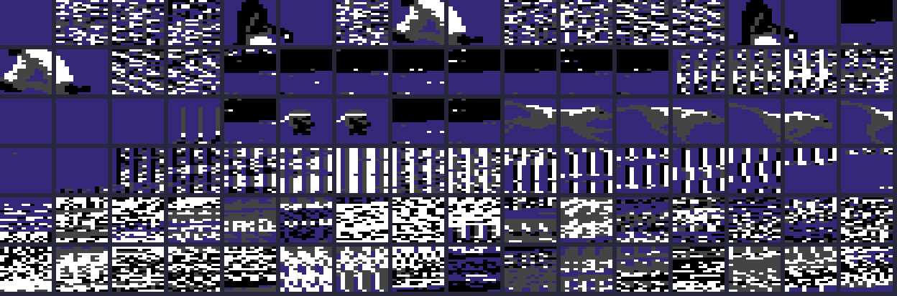

DEVLOG #1 · FIST II REMASTER · THE ORIGINAL
איפה זה מתחיל: Fist II, 1986
· 3 דקות קריאה

לפני שהיה רימייק, הייתה קלטת. זה המשחק שאנחנו מפרקים, ומה שמצאנו בערב הראשון איתו.
המקור
Fist II: The Legend Continues יצא ב־1986 בהוצאת Melbourne House, ופותח ב־Beam Software האוסטרלית, ל־C64 ול־ZX Spectrum. הוא בא אחרי The Way of the Exploding Fist (1985), משחק הקראטה של אחד על אחד, אבל השאיר את מזרן הטורניר מאחור: Fist II הוא הרפתקה גוללת, עם קרבות אחד על אחד לאורך הדרך.
הסיפור, כמו ש־Zzap!64 סיפר אותו בדצמבר 1986: אדון מלחמה מרושע ומעוות, שיושב במבצר בתוך הר געש, הפיל את מסדר ה־Exploding Fist והחריב את המקדשים שלו. שמונה המגילות שמחזיקות את הטכניקות של המסדר, ה־Trigrams, אבדו. אתה מוצא כל אחת, סוחב אותה למקדש שלה ומודט שם כדי לספוג את הכוח שלה, וזה גם נותן לך חיים נוספים. בדרך: חיילים איכרים, לוחמים, שוגונים ומתנקשים רעולי פנים, חיות מוטנטיות, בורות וקירות אש. נלחמים עם שבעה עשר מהלכים, על שיטת הג'ויסטיק של המשחק הראשון.
בגרסת ה־C64 הקרדיטים הם Gregg Barnett (עיצוב וקוד), Greg Holland ו־Russel Comte (גרפיקה) ו־Neil Brennan (מוזיקה). הוא עלה £9.95 בקלטת ו־£14.95 בדיסקט, ובצד השני של הקלטת חיכתה גרסת טורניר של המשחק הראשון.
ZZAP!64 #20
39%
YOUR SINCLAIR
9/10
SINCLAIR USER
5/5
CRASH
58%
מה כתבו עליו
על ה־C64 לא הייתה הרבה אהבה. Zzap!64 נתן לו 39% וקרא לו "מאכזב וחסר תוכן בצורה חמורה": גלילה איטית ומקרטעת, באגים, אין מסך פתיחה ואין מסך סוף משחק. אחד הסוקרים אפילו טען שאחת המנגינות נלקחה מגרסת הדיסקט של The Hobbit. גרסת ה־Spectrum יצאה הרבה יותר טוב, עם 9/10 מ־Your Sinclair ו־5/5 מ־Sinclair User.
מתחת לביקורות יושב מנוע עם עולם גולל, לוחמים שבנויים מחלקי ספרייטים, ושיטת ג'ויסטיק ששווה לשמור. על המנוע הזה הפרויקט הזה.
יום ראשון: הקלטת
ב־6 באוקטובר התחלתי מקובץ הקלטת. TapClean קרא אותה נקי: 302 מתוך 302 בלוקים תקינים, טורבו לואדר מסוג
Super Pavloda, חלק אחד שעולה בשם FIST-II, בלי חורים.
הלואדר רץ מדף המחסנית ($0131), ואפילו ב־VICE עם warp
הוא לוקח ארבע עד חמש דקות. הוא נגמר בתוך המשחק עצמו, בחדר הג'ונגל הראשון.
יום ראשון: הדאמפ הראשון
אחר כך צילום של הזיכרון בזמן שהמשחק רץ: החדר הראשון, הגיבור עומד. הלולאה הראשית יושבת
ב־$2204, למשחק יש פסיקת רסטר משלו, וה־VIC מסתכל על הבנק
העליון ($C000–$FFFF): המסך
ב־$CC00, הצ'רסט ב־$E800,
מולטיקולור. כל שמונת הספרייטים דולקים, והמיקומים שלהם נכתבים מחדש באמצע הפריים: הלוחמים בנויים
מחלקים ועוברים מולטיפלקס.

$C000 מצויר כגרפיקה: הצ'רסט, חלקי הספרייטים, כל מה שה־VIC יכול לראות.
קוד הג'ויסטיק התגלה כמסודר. שגרה אחת ב־$3390 קוראת את
הפורט, שומרת את האש ואת ארבעת הכיוונים, מחליפה ימין ושמאל כשהלוחם מסתכל לצד השני, ומחפשת את התוצאה
בטבלה של 32 בתים ב־$33c2 שהופכת את הסטיק למהלך. כל לוחם
מחזיק מהלך מבוקש, מהלך נוכחי וכיוון.
הפתעה קטנה: קובץ SpritePad של מהלכי Fist שהיה לי התברר כגרפיקה מהמשחק הראשון, עם הגי הלבן. אף ספרייט שלו לא מופיע בית אחר בית ב־Fist II.
הכלל מהיום הראשון
התדריך של כל הפרויקט נכתב באותו לילה: כל טענה קשורה לכתובת ומסומנת כמאומתת או כניחוש, וכל נכס שאנחנו מוציאים חייב להיבנות בחזרה לאותם בתים בדיוק. הכלל הזה הוא מה שאפשר את היום שאחרי.
מקורות על המשחק המקורי: